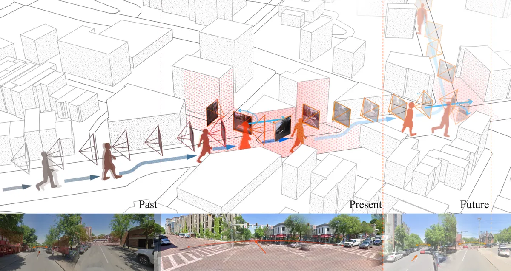

EgoCogNav: Cognition-aware Human Egocentric Navigation
ECCV 2026
A multimodal egocentric navigation framework that jointly forecasts human trajectories, head motion and cognitive states from first-person video and multimodal sensory cues.